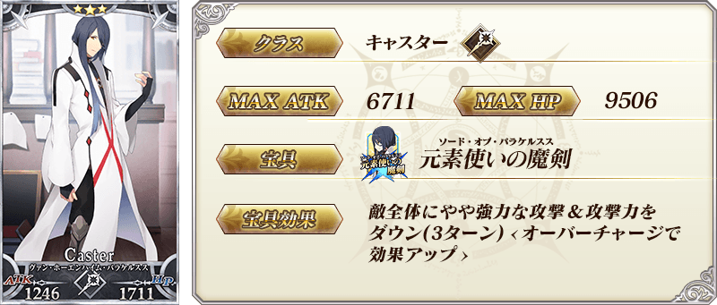
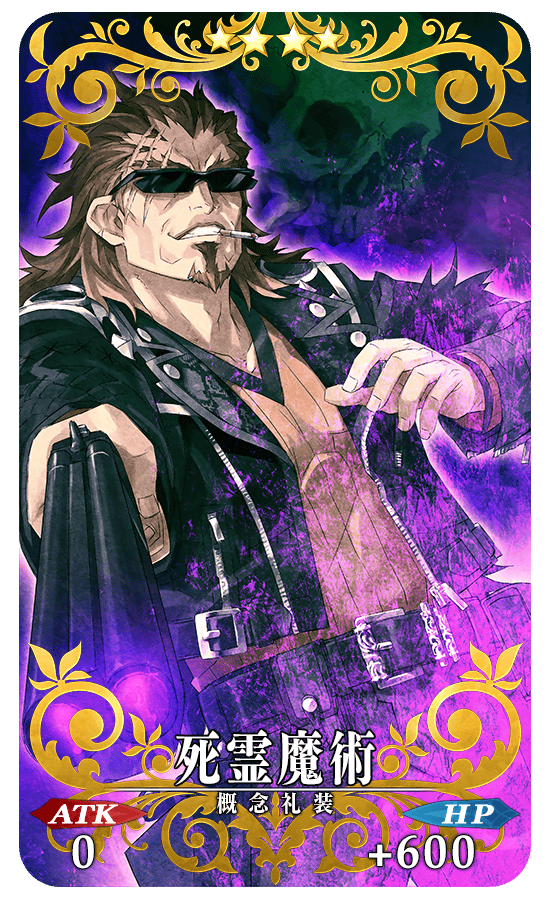
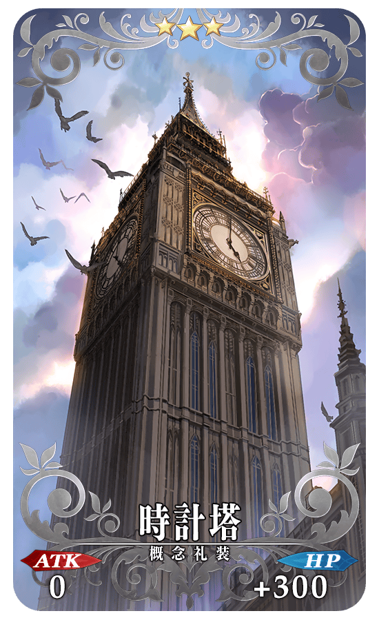

第四章公開情報
期間限定主線AP減半
魔術禮裝追加新禮裝
倫敦PickUp召喚
新登場Servant
新概念禮裝
莫德雷德
弗蘭肯斯坦
※以下皆為台灣時間(UTC+8)


◆公開時間◆
2015年12月28日（一）18：00～
◆第四章，終於開幕◆
「第四特異點 死界魔霧都市 倫敦」開幕。舞台是産業革命期的大英帝國。與新登場的Servant們展開緊張刺激的戰鬥。
◆開放條件◆
通過「第三特異點 封鎖終局四海 歐開諾斯」後開放。


配合第四章的公開，到第三章為止的主線任務的消費AP以期間限定變為1/2。
未通過的各位Master，無論如何藉此機會推進主線任務吧！
未通過的各位Master，無論如何藉此機會推進主線任務吧！
◆對象任務◆
序章、奧爾良、Septem、歐開諾斯内的全部主線任務
※序章、奧爾良、Septem、歐開諾斯内的Free任務、幕間物語為對象外。
※序章、奧爾良、Septem、歐開諾斯内的Free任務、幕間物語為對象外。
◆AP消費1/2期間◆
2015年12月28日（一）18:00～2016年1月13日（三）12:59

為紀念第四章公開，3種魔術禮裝新登場！ 藉由獲得來使用新的Master技能。
魔術禮裝以通過迦爾帝亞之門內的專用任務來獲得。
※任務沒有舉行期限。
魔術禮裝以通過迦爾帝亞之門內的專用任務來獲得。
※任務沒有舉行期限。
◆魔術協會制服◆
全體回復：我方全體的HP回復
靈子讓渡：我方單體的NP增加
指令洗牌：指令卡重新分發
靈子讓渡：我方單體的NP增加
指令洗牌：指令卡重新分發

◆阿特拉斯院制服◆
歐西里斯之塵：對我方單體賦予無敵狀態(1回合)
伊西斯之雨：我方單體的弱體狀態解除
梅吉多之眼：我方單體的技能冷卻減少2回合
伊西斯之雨：我方單體的弱體狀態解除
梅吉多之眼：我方單體的技能冷卻減少2回合

◆迦爾帝亞戰鬥服◆
全體強化：我方全體的攻擊力提升(1回合)
Gandr：對敵單體賦予石化(1回合)
指定變更：將戰鬥中的成員與後備成員替換
Gandr：對敵單體賦予石化(1回合)
指定變更：將戰鬥中的成員與後備成員替換


◆倫敦PickUp召喚期間◆
期間：2015年12月28日(一) 18:00 ～ 2016年1月13日(三) 12:59
為紀念四章公開，在故事召喚中舉辦倫敦PickUp召喚！
※沒到達第四特異點的狀態也能進行倫敦PickUp召喚。
在「第四特異點 死界魔霧都市 倫敦」活躍的Servant「★5（SSR）莫德雷德」、「★4（SR）弗蘭肯斯坦」、「★3（R）亨利・傑基爾＆海德」、 「★3（R）馮・霍恩海姆・帕拉塞爾斯」、 「★3（R）查爾斯・巴貝奇」初登場！
並且，新概念禮裝「★5（SSR）五百年の妄執」、「★4（SR）死霊魔術」、「★4（SR）目覚めた意志」、 「★3（R）時計塔」也是初登場。
在PickUp期間中，上述的初登場Servant及新規概念禮裝的出現機率提升！
※上述的初登場Servant及新概念禮裝在PickUp召喚期間結束後也會出現在故事召喚。
10次召喚★4(SR)以上1枚確定和★3(R)以上的Servant1位確定！
※★4(SR)以上確定包含Servant和概念禮裝。
為紀念四章公開，在故事召喚中舉辦倫敦PickUp召喚！
※沒到達第四特異點的狀態也能進行倫敦PickUp召喚。
在「第四特異點 死界魔霧都市 倫敦」活躍的Servant「★5（SSR）莫德雷德」、「★4（SR）弗蘭肯斯坦」、「★3（R）亨利・傑基爾＆海德」、 「★3（R）馮・霍恩海姆・帕拉塞爾斯」、 「★3（R）查爾斯・巴貝奇」初登場！
並且，新概念禮裝「★5（SSR）五百年の妄執」、「★4（SR）死霊魔術」、「★4（SR）目覚めた意志」、 「★3（R）時計塔」也是初登場。
在PickUp期間中，上述的初登場Servant及新規概念禮裝的出現機率提升！
※上述的初登場Servant及新概念禮裝在PickUp召喚期間結束後也會出現在故事召喚。
10次召喚★4(SR)以上1枚確定和★3(R)以上的Servant1位確定！
※★4(SR)以上確定包含Servant和概念禮裝。





★★★★★SSR
技能
五百年の妄執
ATK 600（最大：2400） HP 0技能
自身被擊倒對敵人賦予寶具封印(2回合)與詛咒(1000傷害・10回合)

★★★★SR
技能
死霊魔術
ATK 0 HP 600（最大：2400）技能
在自身的HP0時以機率賦予根性發動狀態(HP500回復)

★★★★SR
技能
目覚めた意志
ATK 200（最大：750） HP 300（最大：1125）技能
對自身賦予每回合以機率NP12%獲得狀態＆賦予每回合HP500減少狀態【副作用】

★★★R
技能
時計塔
ATK 0 HP 300（最大：1500）技能
對自身賦予每回合NP2%獲得狀態
